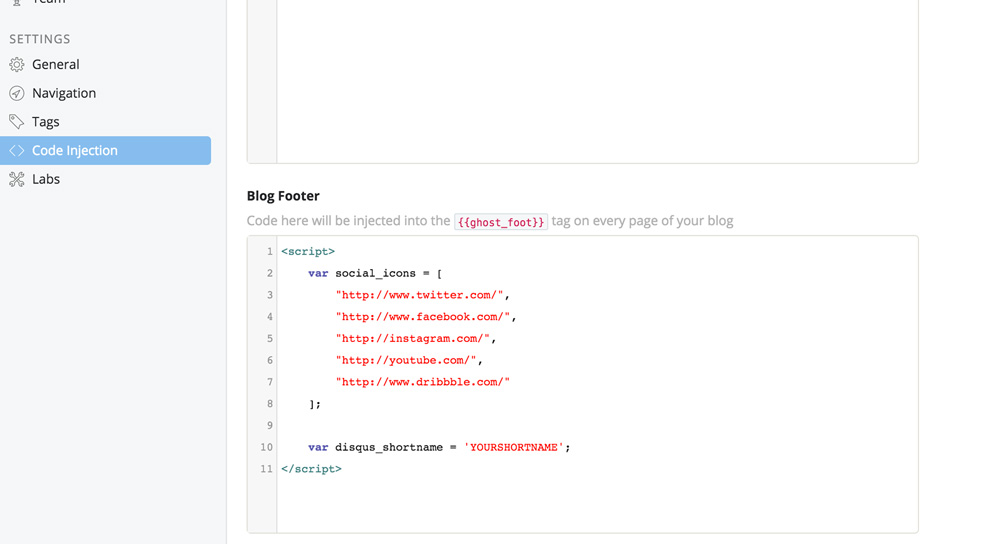
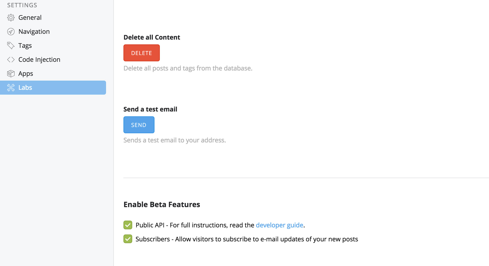

Made byfortress
Thank you so much for purchasing this theme and for being our loyal customer. You are awesome!
This documentation was created to help in each step of installing and customizing your theme. Please, go through the documentation carefully to understand how this theme is made and how to edit it properly.
If you have any questions that are beyond the scope of this help file, please get in touch hello@byfortress.com. Thanks so much!
Once you download the ZIP file, you will see several folders within. Here is the descripton for each folder:
| Folder | Description |
|---|---|
Documentation |
Here is the documentation about the Theme. You have to open the index.html file. |
Design |
Here are the design files, for example Sketch or Photoshop files. |
Theme |
Inside you will find the actual theme. There will be a file called Starter.zip. |
This theme styling was crafted with great detail. (Sass files are provided) There is one main file that has been provided also minified for a better performance:
| File Name | Description |
|---|---|
Starter/assets/css/screen.css |
The main CSS file. |
Starter/assets/css/min/screen.min.css |
The minified version. |
You can edit the "screen.css" file to change anything you want. For faster and more powerfull development you may also use Sass files. This way you will have more flexibility while customizing your theme, but this requires more advanced skills.
The file you have to upload is inside the ZIP file downloaded under a folder called "Theme". Inside this folder you will find the ZIP file called "Starter.zip". That's the file you have to upload.
So if you are a Ghost(Pro) user just follow this tutorial and upload that ZIP file: How to upload a theme to your Ghost(Pro) blog
If you are using a self-hosted version of Ghost the method to upload depends on your Server, for example here is a guide on how to upload the theme if you are using DigitalOcean as your server: How to Upload a Theme on DigitalOcean
I'm pretty sure that if you are using a self-hosted Ghost you already know how to do it :)
In your Admin Panel >> Settings >> Navigation you can create the menu. The oficial documentation about navigation menus is here: How to add a navigation menu to your Ghost blog.
Just like with social icons you can enable Disqus right from your Admin Panel. Just add your Disqus Shortname as a javascript variable in Code Injection >> Blog Footer:
You may use the same script block than the social icons, like this:
Here is the official documentation to installing disqus: Ghost Installation Instructions
You can enable a subscribers form from the Labs section. You only need to check the option Labs >> Subscribers. Once you have enabled Subscribers anyone clicking on the navigation Subscribe link will be directed to a subscription form provided by Ghost:
These are plugins or files used by the theme:
-----------------------------------------------------------------------------------------
Version 1.0.1 - August 2nd, 2017
-----------------------------------------------------------------------------------------
- Updated to Ghost 1.0
-----------------------------------------------------------------------------------------
Version 1.0.0 - November 22nd, 2016
-----------------------------------------------------------------------------------------
- Released
{kind=link}
{kind=link}
{kind=link}